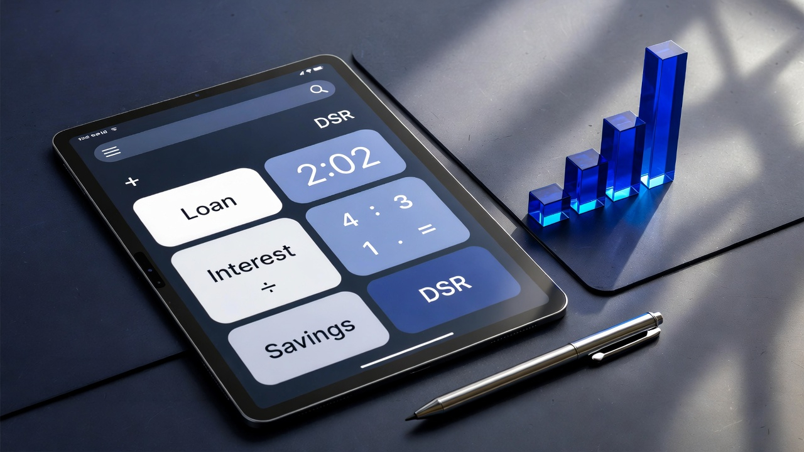

안전한 대출 이용을 위한 핵심 주의사항 및 신용 관리 전략
대출은 자본의 유동성을 확보하는 효율적인 금융 도구이지만 상환 능력을 초과한 부채는 재무적 고립을 초래할 수 있습니다.
2026년 현재 스트레스 DSR 3단계가 본격 시행됨에 따라 대출 실행 전 본인의 가계 소득 대비 원리금 상환 비중을 정밀하게 점검하는 과정이 필수적입니다.
특히 변동금리 상품을 선택할 경우 미래의 금리 상승 시나리오를 가정한 예비 자금 확보 전략이 수반되어야 합니다.
첫째는 DSR(총부채원리금상환비율)입니다.
모든 대출의 원리금 상환액이 연 소득의 일정 비율을 넘지 않도록 제한하므로 추가 대출 계획이 있다면 기존 부채를 통합하여 상환 부담을 낮추는 것이 유리합니다.
둘째는 상환 방식의 선택입니다.
원금균등상환은 초기 부담은 크지만 총 이자액이 가장 적으며, 원리금균등상환은 매달 동일한 금액을 상환하여 자금 계획 수립에 용이합니다.
셋째는 부대비용입니다.
대출 실행 시 인지세, 보증료, 설정비 등의 실질적인 추가 비용이 발생하므로 이를 예산에 반드시 포함시켜야 합니다.
신용점수는 금융 기관이 자본을 배분하는 가장 객관적인 척도입니다.
가장 중요한 원칙은 단 하루의 연체도 허용하지 않는 것입니다.
5일 이상의 단기 연체 정보조차 금융권에 공유되어 점수 급락의 원인이 되며 이는 향후 수년간 금융 거래의 제약으로 작용합니다.
신용카드 한도 대비 사용 비율은 30~50% 수준을 꾸준히 유지하는 것이 신용평가사 알고리즘에서 우량 고객으로 분류되는 지름길입니다.

또한 비금융 데이터인 통신비, 공공요금 납부 내역을 신용평가사에 성실히 등록하는 것만으로도 추가 점수를 확보할 수 있습니다.
최근에는 모바일 앱을 통한 신용 조회가 점수에 영향을 미치지 않으므로 수시로 본인의 점수를 모니터링하고 가점을 받을 수 있는 사유를 점검할 것을 권고합니다.
부채 규모를 줄이는 것만큼이나 신용 거래의 기간과 성실도가 점수 산출의 핵심 지표임을 인지해야 합니다.
고금리 대출을 여러 건 보유하고 있다면 정부지원 상품이나 1금융권의 저금리 상품으로 통합하는 대환 대출 전략이 필요합니다.
대출 건수가 많을수록 신용 점수에 부정적인 영향을 미치므로 소액 대출부터 순차적으로 상환하거나 큰 단위의 대출로 묶어 관리하는 것이 재무 건전성을 높이는 방법입니다.
금융 소비자는 본인의 신용 상태 개선(승인, 소득 증가 등) 시 금리인하요구권을 적극적으로 행사하여 이자 비용을 절감하는 실질적인 이익을 추구해야 합니다.
마지막으로 불법 사금융과 과장 광고를 경계하고 반드시 제도권 내 금융 기관인지 확인하는 절차가 선행되어야 합니다.
머니파인더는 사용자가 최적의 금융 의사결정을 내릴 수 있도록 공신력 있는 데이터를 기반으로 한 분석 도구를 지속적으로 제공할 것입니다.
상환 계획이 없는 대출은 자산이 아니라 부채라는 금융의 대전제를 항상 기억하고 신중하게 도구를 활용하십시오.